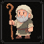
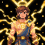
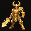
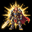
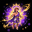

SISTEMA DE ASCENSÃO
~ a jornada da mortalidade à semi-divindade ~

ESTÁGIO 1 — MORTAL COMUM (1–14)
Nenhuma influência divina. Apenas feitos humanos normais.
Narrativa: Os Deuses ignoram sua existência no Olimpo.
ESTÁGIO 2 — MARCADO PELO DESTINO (15-29)
Ao atingir este estágio, você escolhe uma das habilidades abaixo:
FAVORECIDO PELAS MOIRAS
Característica Mística: Você aprende um truque à sua escolha da lista de magias de qualquer classe. Se você já conhece esse truque, você pode conjurá-lo como uma ação bônus. Quando o fizer, você não pode conjurar o mesmo truque novamente durante o mesmo turno. Além disso, se você conjurar o truque como uma ação bônus, você não pode conjurar uma magia de nível durante esse turno, exceto truques com tempo de conjuração de 1 ação. Usos. Você pode usar esta característica um número de vezes igual ao seu bônus de proficiência, e recupera todos os usos ao terminar um descanso longo.
INSTINTO DE SOBREVIVÊNCIA
Reação: Quando você sofre dano de um ataque ou efeito que você possa perceber, você pode usar sua reação para reduzir o dano recebido. O dano é reduzido em um valor igual a "1d10 + seu bônus de proficiência". Você pode usar esta característica após ver o valor do dano, mas antes que ele seja aplicado. Usos. Você pode usar esta característica um número de vezes igual ao seu bônus de proficiência, recuperando todos os usos ao terminar um descanso longo.
FIO DO DESTINO
Característica Mística: Quando você falha em um teste de habilidade ou salvaguarda, você pode recorrer ao destino para tentar novamente. Você refaz a rolagem e adiciona um bônus de +2 ao resultado. Você deve usar o novo resultado. Você pode usar esta característica após saber que falhou, mas antes de quaisquer efeitos da falha serem aplicados. Usos. Você pode usar esta característica duas vezes, recuperando todos os usos ao terminar um descanso longo.
MAU PRESSÁGIO
Reação: Quando uma criatura que você possa ver realiza uma jogada de ataque contra você ou uma criatura que você possa ver, você pode usar sua reação para interferir no destino dela. Role "1d6" e subtraia o resultado da jogada de ataque. Você pode usar esta característica após ver a jogada, mas antes que o Mestre determine se o ataque atinge ou erra. Usos. Você pode usar esta característica um número de vezes igual ao seu bônus de proficiência, recuperando todos os usos ao terminar um descanso longo.
SORTE ANÔMALA
Característica Mística: Quando você realiza uma jogada de ataque, teste de habilidade ou salvaguarda, você pode forçar uma nova tentativa. Você rerrola o dado e deve usar o novo resultado. Você pode usar esta característica após ver o resultado da rolagem, mas antes que seus efeitos sejam aplicados. Usos. Você pode usar esta característica uma vez, recuperando seu uso ao terminar um descanso curto ou longo.
REFLEXO INSTINTIVO
Reação: No início de um combate, imediatamente após a rolagem de iniciativa, mas antes do primeiro turno ser resolvido, você pode agir instintivamente. Escolha um dos seguintes efeitos: Você troca de posição com uma criatura aliada a até 3 metros de você. Você se move até metade do seu deslocamento sem provocar ataques de oportunidade. Usos. Você pode usar esta característica uma vez, recuperando seu uso ao terminar um descanso curto ou longo.
PERSISTÊNCIA MORTAL
Característica Mística: Quando você seria reduzido a 0 pontos de vida, mas não morto instantaneamente, você pode permanecer com 1 ponto de vida em vez disso. Após usar esta característica, você não pode usá-la novamente até terminar um descanso longo. Se você sofrer dano que resultaria em morte instantânea, esta característica não tem efeito.
TOQUE DO DESTINO
Reação: Quando você ou uma criatura aliada que você possa ver a até 9 metros realiza uma jogada de ataque, teste de habilidade ou salvaguarda, você pode usar sua reação para influenciar o resultado. Role "1d4" e adicione o resultado à rolagem. Você pode usar esta característica após ver a rolagem, mas antes que seus efeitos sejam aplicados. Usos. Você pode usar esta característica um número de vezes igual ao seu bônus de proficiência, recuperando todos os usos ao terminar um descanso longo.
DESVIO IMPROVISADO
Reação: Quando você é alvo de um ataque, você pode usar sua reação para tentar evitá-lo. Você ganha um bônus de +2 na Classe de Armadura contra aquela jogada de ataque, potencialmente fazendo com que o ataque erre. Você pode usar esta característica após ver a jogada de ataque, mas antes que o Mestre determine o resultado. Usos. Você pode usar esta característica um número de vezes igual ao seu bônus de proficiência, recuperando todos os usos ao terminar um descanso longo.
PRESSÁGIO FAVORÁVEL
Característica Mística: Antes de realizar uma jogada de ataque, teste de habilidade ou salvaguarda, você pode invocar um vislumbre do destino. Você realiza a rolagem com vantagem. Usos. Você pode usar esta característica duas vezes, recuperando todos os usos ao terminar um descanso longo.

ESTÁGIO 3 — TOCANDO O DIVINO (30-44)
Ao atingir este estágio, você escolhe uma das habilidades abaixo:
CORPO HEROICO
Característica Mística: Seu corpo transcende os limites mortais, adquirindo resiliência sobrenatural. Você recebe um bônus de +1 na sua Classe de Armadura enquanto não estiver incapacitado. Além disso, aumente seu valor de Força ou Constituição em +1, até um máximo de 20. Esse bônus na Classe de Armadura se acumula com outras fontes, exceto bônus com o mesmo nome.
MENTE ESTRATÉGICA
Característica Mística: Sua mente é tocada pela lógica divina e pela percepção absoluta. Você recebe um bônus de +1 na Classe de Dificuldade de todas as suas habilidades e magias. Além disso, aumente sua Inteligência ou Sabedoria em +1, até um máximo de 20. Este bônus se aplica apenas a efeitos originados diretamente de você.
MOVIMENTO DIVINO
Característica Mística: Você se move como se o mundo físico tivesse menos influência sobre você. Seu deslocamento aumenta em 3 metros. Você ignora terreno difícil não mágico. Terreno difícil mágico ainda afeta você normalmente, a menos que você também possua outra característica que o negue. Esse bônus se aplica a todos os seus tipos de deslocamento.
PELE LENDÁRIA
Característica Mística: Sua pele adquire resistência semelhante à de criaturas míticas. Sempre que você sofre dano de um ataque ou efeito, reduza o dano em um valor igual à metade do seu bônus de proficiência (arredondado para cima). Essa redução ocorre após determinar o dano, mas antes de aplicar resistências ou vulnerabilidades.
SENTIDOS ELEVADOS
Característica Mística: Seus sentidos ultrapassam as limitações humanas. Você recebe: +2 bônus em iniciativa, +2 bônus em Percepção passiva. Além disso, você não pode ser surpreendido enquanto estiver consciente. Você ainda pode ser afetado por condições que limitem seus sentidos, como cegueira ou surdez.
SANGUE RESILIENTE
Característica Mística: Sua constituição torna-se excepcionalmente estável. Você tem vantagem em todas as salvaguardas de Constituição. Além disso, uma vez por turno, quando você falhar em uma salvaguarda de Constituição, você pode adicionar seu bônus de proficiência à rolagem, potencialmente transformando a falha em sucesso. Você pode usar esse benefício um número de vezes igual ao seu bônus de proficiência, recuperando todos os usos ao terminar um descanso longo.
FORÇA DESCOMUNAL
Característica Mística: Sua força rivaliza com a de criaturas lendárias. Você recebe +1 nas jogadas de dano de ataques corpo a corpo. Além disso, você é considerado como uma categoria de tamanho maior ao determinar sua capacidade de empurrar, puxar ou levantar. Esse benefício não altera seu espaço ocupado nem alcance.
ESSÊNCIA ARCANA
Característica Mística: A energia mágica flui naturalmente através de você. Você aprende um truque à sua escolha da lista de magias de qualquer classe. Além disso, você recebe +1 nas jogadas de ataque de magias. Se você não possuir a habilidade de conjurar magias, este truque usa Constituição como atributo de conjuração.
AGILIDADE SOBRENATURAL
Característica Mística: Seus movimentos tornam-se imprevisíveis e fluidos. Você pode realizar a ação Desengajar como uma ação bônus. Usos. Você pode usar esta característica um número de vezes igual ao seu bônus de proficiência, recuperando todos os usos ao terminar um descanso longo. Quando você usa esta habilidade, você não provoca ataques de oportunidade durante o restante do turno.
AURA LATENTE
Característica Mística: Uma presença divina emana de você, enfraquecendo seus inimigos. Criaturas hostis a até 1,5 metro de você sofrem uma penalidade de -1 em salvaguardas contra habilidades, magias e efeitos originados por você. Esse efeito não se acumula com múltiplas fontes iguais.

ESTÁGIO 4 — ESCOLHIDO DOS DEUSES (45-59)
Ao atingir este estágio, você escolhe uma das habilidades abaixo:
GOLPE PRECISO
Característica de Combate: Uma vez por turno, quando você realiza uma jogada de ataque, você pode adicionar +2 à rolagem. Se o ataque atingir, ele causa 1d8 de dano adicional. Você pode declarar o uso após rolar o ataque, mas antes do resultado ser determinado.
INVESTIDA DIVINA
Característica de Combate: Se você se mover pelo menos 6 metros em linha reta imediatamente antes de atingir uma criatura com um ataque corpo a corpo, o ataque causa 1d10 de dano adicional. O alvo deve realizar uma salvaguarda de Força (CD = 8 + Proficiência + modificador de atributo relevante). Em caso de falha, o alvo fica caído.
DEFESA INSTINTIVA
Reação: Quando você é atingido por um ataque, você pode usar sua reação para ganhar resistência ao dano daquele ataque ou um bônus de +3 na Classe de Armadura contra aquele ataque. Você pode escolher usar esta habilidade após ver a jogada de ataque, mas antes do dano ser aplicado. Usos. Proficiência por descanso longo.
CONTRA-ATAQUE DIVINO
Reação: Quando uma criatura dentro do seu alcance erra um ataque contra você, você pode usar sua reação para realizar um ataque corpo a corpo contra ela. Esse ataque ocorre imediatamente após o erro. Usos. Proficiência por descanso longo.
CONJURAÇÃO ACELERADA
Característica Mística: Quando você conjura uma magia com tempo de conjuração de 1 ação, você pode alterar o tempo de conjuração para uma ação bônus. A magia deve ser de nível igual ou inferior ao seu bônus de proficiência. Você ainda deve seguir as regras normais de conjuração de magia. Usos. Proficiência por descanso longo.
ESCUDO ARCANO
Reação: Quando você sofre dano, você pode usar sua reação para reduzir o dano em 2d10 + modificador de habilidade de conjuração. Você pode usar essa habilidade após ver o valor do dano, mas antes de aplicá-lo. Usos. Proficiência por descanso longo.
IMPACTO BRUTAL
Característica de Combate: Quando você acerta um acerto crítico com um ataque, você causa 1d12 de dano adicional. Esse dano é do mesmo tipo do ataque que o originou.
FOCO DE COMBATE
Ação Bônus: Você entra em um estado de concentração marcial. Até o início do seu próximo turno, você recebe +1 nas jogadas de ataque. Usos. Proficiência por descanso longo.
CANAL DIVINO
Característica Mística: Uma vez por turno, quando você causa dano com uma magia, você pode adicionar seu bônus de proficiência ao dano causado. Esse bônus é aplicado após a rolagem de dano.
AURA DE GUERRA
Ação Bônus: Você emana uma aura de combate inspiradora. Aliados a até 3 metros recebem +1 nas jogadas de ataque até o início do seu próximo turno. Usos. Proficiência por descanso longo.

ESTÁGIO 5 — HERÓI LENDÁRIO (60-74)
Ao atingir este estágio, você escolhe duas das habilidades abaixo.
CORPO DE CAMPEÃO
Característica Mística: Seu corpo torna-se digno das lendas, suportando dores, impactos e exaustão muito além dos limites mortais. Seus pontos de vida máximos aumentam em 25, e esse aumento se aplica novamente sempre que você adquirir este estágio. Sempre que seus pontos de vida máximos aumentarem desta forma, seus pontos de vida atuais também aumentam na mesma quantidade. Além disso, você tem vantagem em testes de resistência contra morte. Por fim, quando você recupera pontos de vida por meio de magia, habilidade ou descanso, você recupera uma quantidade adicional de pontos de vida igual ao seu bônus de proficiência. Esse bônus adicional pode ser aplicado apenas uma vez por efeito de cura. Este benefício não se acumula consigo mesmo caso você receba esta característica por mais de uma fonte.
GOLPE LENDÁRIO
Característica de Combate: Seus ataques carregam o peso de feitos que já entraram para a história. Uma vez por turno, quando você acerta uma criatura com um ataque com arma ou ataque desarmado, você pode causar dano adicional igual ao seu bônus de proficiência. Você pode decidir usar esta característica após confirmar que o ataque atingiu, mas antes de rolar o dano. Se o ataque atingir mais de uma criatura ao mesmo tempo, como por meio de uma característica especial, o dano adicional se aplica apenas a uma dessas criaturas. O dano adicional é do mesmo tipo do ataque que o provocou.
PRESENÇA DOMINANTE
Característica Mística: Sua mera presença em combate pressiona o espírito e a confiança de seus adversários. Criaturas hostis a até 3 metros de você sofrem uma penalidade de -1 nas jogadas de ataque feitas contra você. Essa penalidade se aplica apenas enquanto você não estiver incapacitado e a criatura puder ver ou perceber você. Além disso, você tem vantagem em testes de Carisma (Intimidação) feitos contra criaturas que tenham testemunhado você em combate, visto seus poderes ou ouvido relatos confiáveis sobre seus feitos. Se uma criatura for imune à condição amedrontado, ela ainda sofre a penalidade nas jogadas de ataque, mas o Mestre pode negar a vantagem em Intimidação, se apropriado.
RESISTÊNCIA MÍTICA
Característica Mística: Seu corpo e espírito se adaptam aos perigos mais extremos. Ao terminar um descanso longo, escolha um dos seguintes tipos de dano: ácido, frio, fogo, força, elétrico, necrótico, psíquico, radiante, trovejante, venenoso ou ácido. Até terminar seu próximo descanso longo, você tem resistência ao tipo de dano escolhido. Além disso, uma vez por descanso curto, quando você sofrer dano do tipo escolhido, você pode usar sua reação para reduzir esse dano em uma quantidade adicional igual a "1d12 + seu bônus de proficiência". Você pode usar essa reação após ver o dano, mas antes de aplicá-lo.
AURA HEROICA
Característica Mística: Sua presença inspira aliados e estabiliza a linha de frente mesmo nos momentos mais caóticos. Enquanto você não estiver incapacitado, criaturas aliadas à sua escolha a até 3 metros de você recebem +1 na Classe de Armadura. Uma criatura perde esse benefício imediatamente se sair do alcance da aura. Além disso, quando um aliado beneficiado por esta aura falha em uma salvaguarda contra a condição amedrontado, você pode usar sua reação para permitir que ele repita a salvaguarda, devendo usar o novo resultado. Usos. Você pode usar esta reação um número de vezes igual ao seu bônus de proficiência, recuperando todos os usos ao terminar um descanso longo.
ESPÍRITO INDOMÁVEL
Característica Mística: Seu espírito se recusa a ceder, mesmo diante de efeitos capazes de destruir a mente ou dobrar a vontade. Quando você falha em uma salvaguarda, você pode refazer a rolagem. Você deve usar o novo resultado. Você pode decidir usar esta característica após saber que falhou, mas antes de sofrer quaisquer efeitos da falha. Usos. Você pode usar esta característica duas vezes, recuperando todos os usos ao terminar um descanso longo. Se a salvaguarda possuir um efeito parcial em caso de sucesso, você passa a sofrer apenas esse efeito parcial caso a nova rolagem seja bem-sucedida.
CAÇADOR DE MONSTROS
Característica de Combate: Seus golpes são particularmente devastadores contra criaturas de grande porte e natureza monstruosa. Uma vez por turno, quando você atinge uma criatura Grande ou maior com um ataque com arma, você causa "2d6" de dano adicional a ela. Você pode decidir usar esta característica após o ataque atingir, mas antes de rolar o dano. Além disso, você tem vantagem em testes de Sabedoria (Sobrevivência) e Inteligência relacionados a rastrear, identificar ou recordar informações sobre monstros, bestas monstruosas, gigantes e criaturas lendárias, a critério do Mestre. O dano adicional é do mesmo tipo do ataque que o provocou.
RECUPERAÇÃO LENDÁRIA
Ação Bônus: Seu corpo aprendeu a se recompor com velocidade antinatural em meio ao combate. Como uma ação bônus, você recupera pontos de vida iguais a "2d8 + seu modificador de Constituição + seu bônus de proficiência". Você não pode usar esta característica se estiver com 0 pontos de vida, a menos que outra habilidade permita que você realize ações bônus nessa condição. Usos. Você pode usar esta característica um número de vezes igual ao seu bônus de proficiência, recuperando todos os usos ao terminar um descanso longo. Quando você usa esta característica, sinais visíveis de energia divina, determinação heroica ou vitalidade mítica se manifestam em você, conforme o tema do personagem.
MESTRE DA BATALHA
Característica de Combate: Você enxerga pequenas aberturas no combate e sabe explorá-las com perfeição. Quando você realiza uma jogada de ataque, você pode escolher realizar a rolagem com vantagem. Você deve declarar o uso desta característica antes de rolar o ataque. Usos. Você pode usar esta característica um número de vezes igual ao seu bônus de proficiência, recuperando todos os usos ao terminar um descanso longo. Além disso, se o ataque realizado com vantagem atingir, seu deslocamento não provoca ataques de oportunidade da criatura atingida até o final do turno atual.
AURA INTIMIDANTE
Característica Mística: A sua presença é tão esmagadora que inimigos hesitam antes mesmo de atacá-lo. Uma criatura hostil que iniciar o turno a até 3 metros de você deve ser bem-sucedida em uma salvaguarda de Sabedoria (CD = 8 + seu bônus de proficiência + seu modificador de Carisma, Força ou Sabedoria, escolhido quando você adquire esta característica) ou terá desvantagem na próxima jogada de ataque que realizar até o final do turno. Uma criatura que seja bem-sucedida nessa salvaguarda fica imune a este efeito até o início do próximo turno dela. Você deve estar consciente e não incapacitado para que esta aura funcione.

ESTÁGIO 6 — SEMIDEUS DESPERTO (75-89)
Ao atingir este estágio, você escolhe uma das habilidades abaixo.
IRA DOS DEUSES
Ação Bônus: Você desperta por um instante a fúria dos poderes superiores que observam seu destino. Como uma ação bônus, você entra em um estado de exaltação divina que dura por 1 minuto ou até você ficar incapacitado. Durante esse estado, uma vez em cada um dos seus turnos, quando você atinge uma criatura com um ataque, você recebe os seguintes benefícios: Você recebe +2 na jogada de ataque. O ataque causa "2d8" de dano adicional. Você pode aplicar esse benefício a apenas um ataque por turno, mesmo que realize múltiplos ataques. O dano adicional é do mesmo tipo do ataque que o provocou, a menos que o Mestre permita que ele assuma uma manifestação temática apropriada ao seu poder divino. Usos. Você pode usar esta característica uma vez, recuperando seu uso ao terminar um descanso longo.
CORPO IMORTAL
Característica Mística: Seu corpo se recusa a cair enquanto sua lenda ainda não chegou ao fim. Quando você seria reduzido a 0 pontos de vida, mas não morto instantaneamente, você pode permanecer com 1 ponto de vida em vez disso. Ao fazer isso, até o início do seu próximo turno, você recebe resistência a todos os tipos de dano. Além disso, durante esse período, você tem vantagem em salvaguardas e testes feitos para evitar ser empurrado, derrubado ou incapacitado fisicamente. Após usar esta característica, você não pode usá-la novamente até terminar um descanso longo. Se um efeito causar morte instantânea, esta característica não impede essa morte.
DOMÍNIO ELEMENTAL
Característica Mística: Você assume uma afinidade absoluta com uma força primordial. Escolha um dos seguintes tipos de dano ao adquirir esta característica: ácido, frio, fogo, elétrico, necrótico, psíquico, radiante ou trovejante. Uma vez por turno, quando você causa dano com um ataque, magia ou habilidade, você pode causar "1d8" de dano adicional do tipo escolhido. Além disso, seus ataques, magias e habilidades ignoram resistência ao tipo de dano escolhido. Se uma criatura for imune ao tipo de dano escolhido, essa imunidade não é ignorada, a menos que o Mestre determine o contrário para efeitos excepcionalmente épicos. Quando você adquire esta característica, manifestações visuais relacionadas ao elemento escolhido passam a acompanhar seus poderes sempre que você desejar.
REFLEXOS SOBRENATURAIS
Característica Mística: Seus reflexos ultrapassam qualquer padrão mortal, permitindo respostas instantâneas mesmo sob pressão extrema. Você recebe +2 na Classe de Armadura. Além disso, você tem vantagem em salvaguardas de Destreza. Por fim, quando você é forçado a realizar uma salvaguarda de Destreza para sofrer metade do dano em caso de sucesso, você pode usar sua reação para receber resistência àquele dano se for bem-sucedido na salvaguarda. Usos. Você pode usar essa reação um número de vezes igual ao seu bônus de proficiência, recuperando todos os usos ao terminar um descanso longo.
AÇÃO DIVINA
Característica Mística: Por um breve momento, você rompe a cadência comum do combate e age além do que os mortais poderiam suportar. No seu turno, você pode realizar uma ação adicional. Essa ação adicional pode ser usada para realizar a ação Atacar (uma única vez), Correr, Desengajar, Esquivar, Usar um Objeto ou Conjurar uma magia com tempo de conjuração de 1 ação. Se você usar essa ação adicional para conjurar uma magia, ainda deverá obedecer às restrições normais de conjuração no mesmo turno. Você pode ativar esta característica em qualquer momento do seu turno, mas não durante o turno de outra criatura. Usos. Você pode usar esta característica uma vez, recuperando seu uso ao terminar um descanso curto ou longo.
VONTADE ABSOLUTA
Característica Mística: Sua mente torna-se um bastião que pouquíssimos poderes podem violar. Você se torna imune à condição amedrontado. Além disso, você tem vantagem em salvaguardas contra efeitos que causariam as condições enfeitiçado, amedrontado ou atordoado, ou que tentem ler sua mente, alterar suas emoções, controlar suas ações ou manipular sua percepção. Se você for bem-sucedido em uma dessas salvaguardas, você pode usar sua reação para revelar sua resistência sobrenatural. Ao fazê-lo, a criatura que causou o efeito sofre desvantagem na próxima jogada de ataque ou salvaguarda que fizer antes do final do próximo turno dela. Usos. Você pode usar essa reação um número de vezes igual ao seu bônus de proficiência, recuperando todos os usos ao terminar um descanso longo.
RECUPERAÇÃO DIVINA
Ação Bônus: A energia divina em seu sangue reconstitui sua forma mesmo sob violência intensa. Como uma ação bônus, você ativa esta característica por 3 rodadas. Até o final da duração, no início de cada um dos seus turnos, você recupera 10 pontos de vida. Esta regeneração termina antecipamente se você ficar com 0 pontos de vida ou morrer. Enquanto esta característica estiver ativa, você tem vantagem em salvaguardas contra as condições envenenado e exaustão. Usos. Você pode usar esta característica uma vez, recuperando seu uso ao terminar um descanso longo.
GOLPE INEVITÁVEL
Característica de Combate: Você aprendeu a atingir exatamente onde a defesa do inimigo falha. Uma vez por turno, quando você realiza uma jogada de ataque, você pode ignorar bônus de Classe de Armadura concedidos por escudos, cobertura, magias ou efeitos temporários ao determinar se o ataque atinge. Você pode decidir usar esta característica após ver a jogada, mas antes do Mestre declarar se ela acerta ou erra. Este benefício não ignora a Classe de Armadura base da criatura nem a armadura física que ela veste, apenas bônus adicionais à Classe de Armadura. Usos. Você pode usar esta característica um número de vezes igual ao seu bônus de proficiência, recuperando todos os usos ao terminar um descanso longo.
FORMA SUPERIOR
Ação: Você libera sua forma semidivina em um estado mais estável e completo. Como uma ação, você assume uma forma superior por 1 minuto. Durante a duração, você recebe os seguintes benefícios: +2 na Classe de Armadura. +2 em todas as salvaguardas. Seu deslocamento aumenta em 3 metros. Você tem vantagem em testes de Força e Constituição. A transformação termina antecipadamente se você ficar inconsciente ou morrer. Uma manifestação visível acompanha esta transformação, como olhos brilhantes, aura divina, marcas luminosas, armadura espectral, vento ao redor do corpo ou outro sinal semelhante. Usos. Você pode usar esta característica uma vez, recuperando seu uso ao terminar um descanso longo.
PRESENÇA DIVINA
Característica Mística: Seu poder se derrama ao seu redor e torna mais difícil resistir à sua vontade. Criaturas hostis a até 3 metros de você têm desvantagem em salvaguardas contra suas habilidades, magias e características enquanto você não estiver incapacitado. Uma criatura que não possa ver, ouvir ou perceber sua presença não é afetada, a critério do Mestre. Esse efeito não se acumula com efeitos idênticos ou equivalentes que imponham desvantagem generalizada nas mesmas salvaguardas.
ESTÁGIO 7 — ASCENSÃO DIVINA (90-100)
Ao atingir este estágio, você escolhe 1 Dádiva Divina e 1 Habilidade Assinatura.
DÁDIVAS DIVINAS
AVATAR OLÍMPICO (Aetherion)
Você assume um aspecto digno de ser reconhecido pelos próprios deuses. Como uma ação, você manifesta sua forma avatar por 1 minuto. Durante a duração, você recebe os seguintes benefícios: Você recebe +2 em testes de atributo, jogadas de ataque, jogadas de dano, Classe de Armadura e salvaguardas. Você tem resistência a todos os tipos de dano. Uma vez em cada um dos seus turnos, quando você atinge uma criatura com um ataque ou causa dano com uma magia, você pode causar "2d8" de dano adicional. O dano adicional é do mesmo tipo do ataque ou magia que o provocou, ou de um tipo apropriado ao seu domínio, com permissão do Mestre. A manifestação dessa forma é sempre grandiosa, como coroas de luz, relâmpagos, fogo sagrado, sombras régias, armadura celestial, olhos solares ou outros sinais de ascensão. Usos. Você pode usar esta característica uma vez, recuperando seu uso ao terminar um descanso longo.
EXISTÊNCIA ELEVADA (Humano)
Sua existência já não pode ser medida inteiramente pelos padrões dos mortais. Você não envelhece e não pode morrer em decorrência de envelhecimento natural ou sobrenatural. Além disso, acertos críticos contra você são tratados como acertos normais. Por fim, quando você falha em uma salvaguarda contra um efeito que envelheça, enfraqueça ou deteriore seu corpo ou essência, você pode optar por ser bem-sucedido em vez disso. Usos. Você pode usar esse benefício de sucesso automático uma vez, recuperando o uso ao terminar um descanso longo.
CORPO PERFEITO (Megalion)
Sua forma aproxima-se de um ideal físico e espiritual inalcançável aos mortais. Você recebe +2 permanente na Classe de Armadura. Além disso, seu deslocamento aumenta em 3 metros, e você recebe +2 em testes de Atletismo e Acrobacia. Por fim, uma vez em cada um dos seus turnos, quando você falha em um teste de Força, Destreza ou Constituição, você pode adicionar +2 à rolagem, potencialmente transformando a falha em sucesso.
ESSÊNCIA IMORTAL (Tartarianos)
Sua centelha divina resiste ao fim absoluto. Você não pode ser morto instantaneamente por dano massivo, efeitos que causem morte automática ou habilidades semelhantes, a menos que o efeito venha de uma divindade maior, artefato supremo ou decisão específica do Mestre em um contexto épico. Sempre que um efeito tentaria matá-lo instantaneamente, você é reduzido a 1 ponto de vida em vez disso. Após usar este benefício, você não pode usá-lo novamente até terminar um descanso longo.
AURA DE SOBERANIA (Therionitas)
Seu poder é reconhecido instintivamente por aliados e temido pelos inimigos. Enquanto você não estiver incapacitado, aliados à sua escolha a até 9 metros de você recebem +2 em salvaguardas contra ser amedrontados ou enfeitiçados. Além disso, criaturas hostis que iniciem o turno a até 3 metros de você sofrem uma penalidade de -2 na primeira jogada de ataque que fizerem até o final do turno. Uma criatura não é afetada por essa penalidade se for imune à condição amedrontado e tiver ND ou nível igual ou superior ao seu, a critério do Mestre.
HABILIDADES ASSINATURA
GOLPE DO OLIMPO
Ação: Você descarrega um ataque de magnitude quase divina em um único instante. Como parte desta ação, faça um ataque com arma ou ataque desarmado. Se o ataque atingir, ele causa "6d10" de dano adicional. Esse dano ignora resistência ao tipo de dano do ataque. Se o alvo for uma criatura Grande ou maior, ele deve ser bem-sucedido em uma salvaguarda de Força (CD = 8 + seu bônus de proficiência + seu modificador de Força, Destreza ou atributo de conjuração) ou será derrubado no chão. Usos. Você pode usar esta característica uma vez, recuperando seu uso ao terminar um descanso longo.
RUPTURA DO DESTINO
Reação: Você interfere diretamente no fio do destino, recusando o resultado que acabou de acontecer. Quando uma criatura que você possa ver a até 18 metros realiza uma jogada de ataque, teste de habilidade ou salvaguarda, você pode usar sua reação para forçá-la a repetir a rolagem. Você escolhe qual dos dois resultados será usado. Você pode usar esta característica após a rolagem ser feita, mas antes que seus efeitos sejam aplicados. Se a criatura estiver protegida por poder divino equivalente, artefato superior ou efeito semelhante, o Mestre pode exigir uma disputa narrativa ou limitar esta habilidade. Usos. Você pode usar esta característica uma vez por sessão.
COMANDO DIVINO
Ação: Sua voz carrega autoridade sobrenatural, e poucos conseguem resistir a ela. Escolha uma criatura que você possa ver a até 18 metros. O alvo deve ser bem-sucedido em uma salvaguarda de Sabedoria (CD = 8 + seu bônus de proficiência + seu modificador de Carisma, Sabedoria ou atributo de conjuração) ou perde o próximo turno. Criaturas imunes à condição enfeitiçado ou incapacitadas de ouvir você têm vantagem nessa salvaguarda, a critério do Mestre. Após ser afetada ou passar na salvaguarda contra esta habilidade, uma criatura fica imune a ela por 24 horas. Usos. Você pode usar esta característica uma vez, recuperando seu uso ao terminar um descanso longo.
TEMPO QUEBRADO
Ação: Por um instante, você se move fora do fluxo normal do tempo. Após usar esta ação, você ganha imediatamente um turno adicional, que ocorre logo após o turno atual. Durante esse turno adicional, você pode se mover, realizar uma ação, usar uma ação bônus e interagir com objetos normalmente. Você não pode usar esta característica para ganhar outro turno adicional, mesmo por meio de outras habilidades semelhantes. Se um efeito terminaria no fim do seu turno atual, ele permanece ativo até o final do turno adicional. Usos. Você pode usar esta característica uma vez, recuperando seu uso ao terminar um descanso longo.
CHAMADO DIVINO
Ação: Você convoca uma manifestação superior para lutar ao seu lado. Escolha uma criatura espiritual, celestial, infernal, elemental, ancestral ou mitológica apropriada ao seu tema divino. Essa criatura surge em um espaço desocupado que você possa ver a até 9 metros. A criatura age imediatamente após você na ordem de iniciativa, obedece aos seus comandos verbais e permanece por 1 minuto, até cair a 0 pontos de vida ou até você dispensá-la sem gastar ação. O Mestre define a ficha da criatura convocada, mas ela deve ser equivalente a uma criatura poderosa apropriada ao estágio da campanha, sem superar o protagonismo do personagem. Usos. Você pode usar esta característica uma vez, recuperando seu uso ao terminar um descanso longo.
🎲 MECÂNICA DE PONTUAÇÃO
GANHOS (ACAMAÇÃO)
- ✨ Grandes Feitos: 1d4 pontos
- 📜 Missões: Dificuldade da missão
- ⚔️ Derrotar Lendários: 1 + Dificuldade
PERDAS (IRA DIVINA)
- ❌ Negar Ajuda: -1 ponto
- 💀 Matar Inocente: -1d4 pontos
- ⚡ Desrespeitar Deuses: -5 (Menor) / -10 (Maior)
- 🏛️ Profanar Templos: -15 (Menor) / -30 (Maior)
⚠️ PUNIÇÕES NEGATIVAS
Pontos negativos no Nível 1 geram punições severas:
- -30: Desvantagem em testes.
- -50: Perseguição divina constante.
- -80: Possibilidade iminente de execução divina.